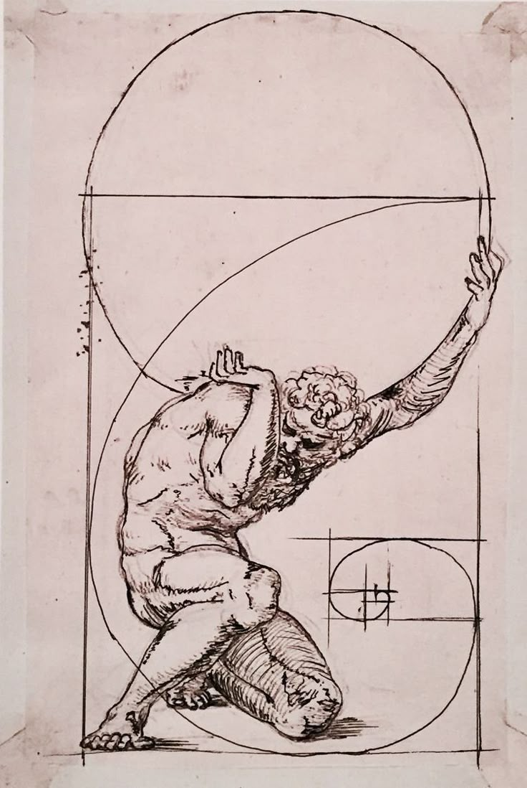

PHILOSOPHY • WISDOM • TRUTH
Where timeless ideas refuse to die.
Enter the vaultThe Archive
Long after the marble has cracked and the temples have fallen quiet, the sentences remain — copied by hand, argued over, carried across centuries by people who needed them. Wisdom Vault is where those sentences are kept.

The unexamined life is not worth living.
Philosophers & Poets
The World They Left Behind
Columns still standing without their roofs. Statues missing the arms that once gestured. What remains was never the point — it is what they thought that outlasted what they built.
Where words are kept beyond their time.
Gallery